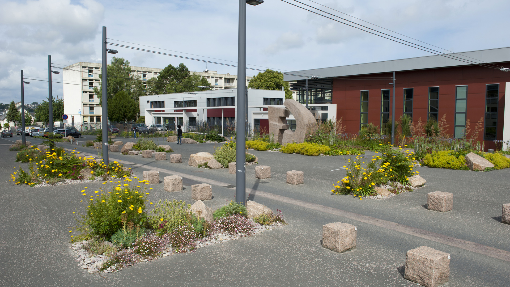
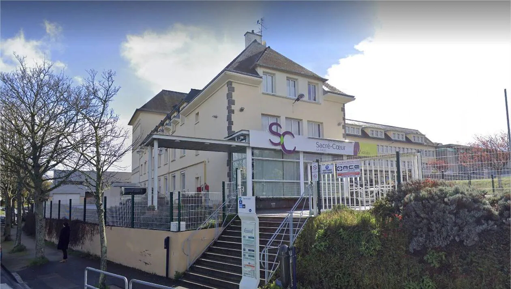
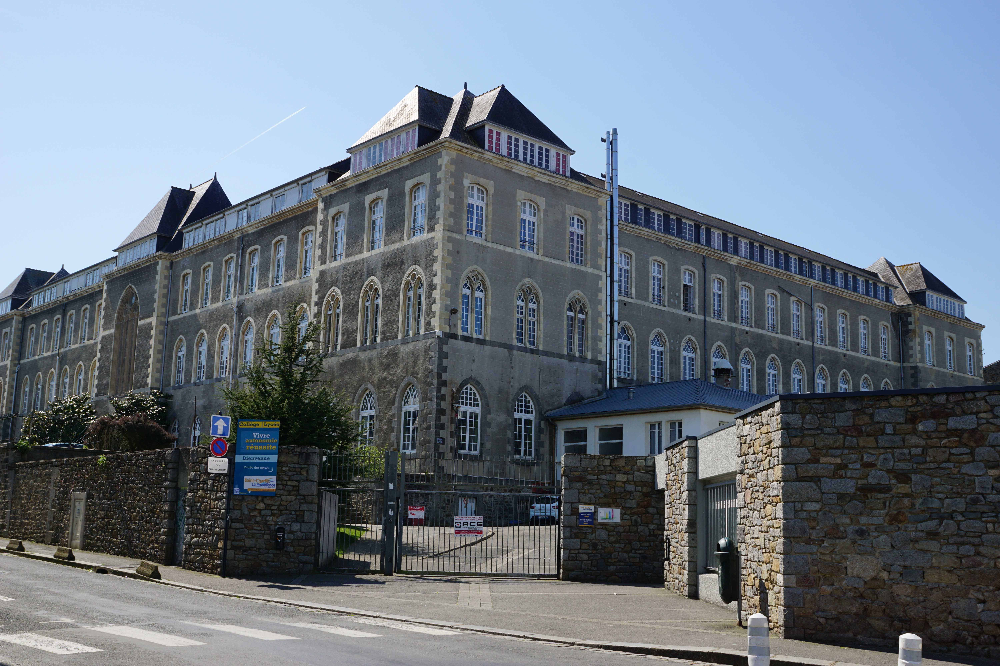

Mon Parcours

Lycée Félix le Dantec - 2024-2026
Actuellement en BTS SIO (Services Informatiques aux Organisations) option SISR à Lannion. J'y approfondis mes connaissances en réseaux, systèmes, cybersécurité et développement.

Lycée Sacré-Coeur - 2021-2024
Lycée général, technologique et professionnel à Saint-Brieuc. J'ai suivi une filière professionnelle (spécialité SN option RISC), ce qui m'a permis de commencer l'informatique.

Collège Saint-Charles la Providence - 2018-2021
Collège situé à Saint-Brieuc. J'y ai acquis les bases de la culture générale et développé ma curiosité pour les sciences et la technologie grâce à l'option SNSE (Sciences numériques et sciences experimentales).